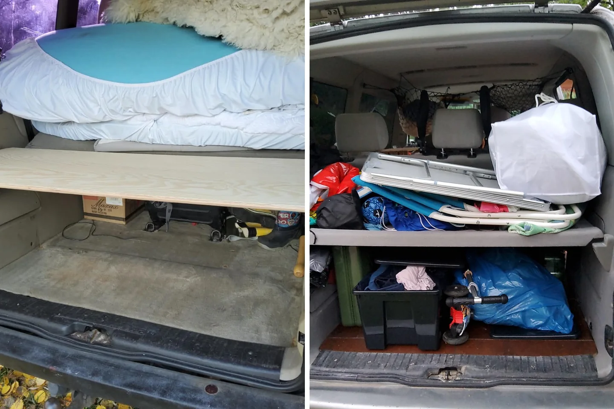

Więcej miejsca do przechowywania w bagażniku — moja prosta półka w czerwonym T4

Bagażnik T4 wygląda na duży — dopóki nie znajdziesz w środku pościeli, narzędzi, zapasów, stołu i sprzętu kempingowego. Bez struktury wszystko jest ułożone jedno na drugim. Oczywiście zawsze potrzebujesz dokładnie tego pudełka, które znajduje się na samym dole. Moje rozwiązanie było zaskakująco proste: dodatkowa warstwa z tyłu.
Wysokość staje się miejscem do przechowywania
Na pierwszym zdjęciu wciąż widać prawie pusty nowy drewniany panel. Dzieli pień na dwie części. Na górze jest miejsce na większe i lżejsze przedmioty; na dole można przechowywać pudełka, narzędzia i sprzęt. Dzięki temu korzystam nie tylko z podłoża, ale ostatecznie także z wysokości.
Drugie zdjęcie pokazuje rzeczywistość po oczyszczeniu. To nie jest błyszczące wykończenie ani idealnie zorganizowana wystawa. To prawdziwa walizka podróżna. Ale wszystko już nie jest w jednym stosie i szybciej docieram do potrzeb.
Moje zasady pakowania na tył
- Ciężkie obiekty jak najgłębiej i jak najbliżej stabilnej granicy.
- Często potrzebne przedmioty pozostają dostępne bez całkowitego opróżniania.
- Na górnym poziomie dozwolone są lekkie, nieporęczne przedmioty.
- Luźne części są zabezpieczane na przejazd.
- Sprzęt awaryjny nigdy nie może zniknąć za połową domu.
Dlaczego ta niewielka renowacja tak bardzo się zmieniła
Podczas podróży ciągle sprzątasz: śpisz, gotujesz, prowadzisz samochód, robisz zakupy, znowu śpisz. Każde niepotrzebne poszukiwanie kosztuje czas i stres. Na drugim poziomie mogłem szybciej przełączać się z trybu jazdy na tryb życia. I właśnie to jest najważniejsze w codziennym życiu niż jakikolwiek szczególnie wyszukany szczegół.
Moja półka była prosta, ale pasowała do mojego czerwonego i mojego stylu podróżowania. Dla mnie konwersja vana nie oznacza instalowania jak największej ilości pojazdu. Oznacza to rozwiązywanie własnych problemów w sposób, który ułatwia życie w drodze.
Do zobaczenia wkrótce i życzę udanej podróży,
twoja nazwa Tussy 💛